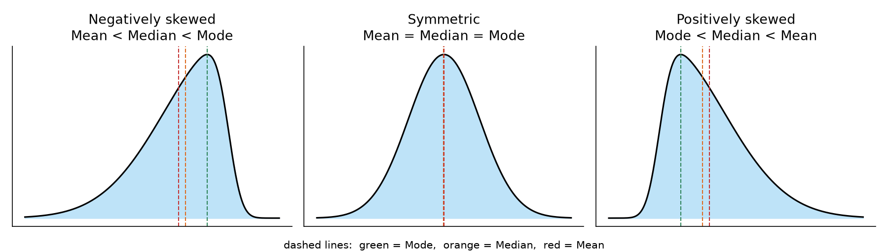
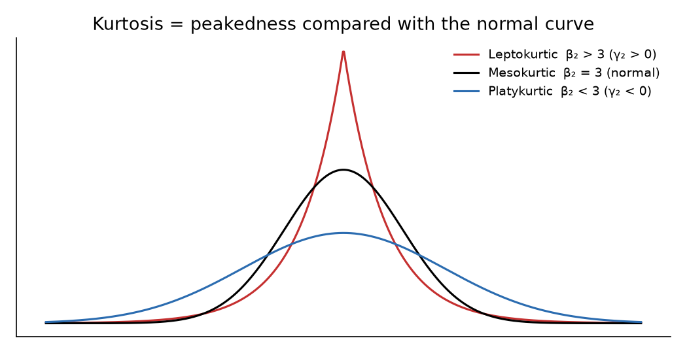

S5 · Moments, Skewness and Kurtosis
Why this matters for the TF. This is the most repeated long calculation in the statistics half.
“First four moments about an assumed mean, convert to moments about the mean, find or , and comment” appeared in 2019-20 Q5(b) (25 marks), 2022-23 Q6(c) (15 marks) and 2023-24 Q6(a) (13 marks).
Bowley’s and Kelly’s skewness appeared in 2020-21 Q5(b) (15 marks), a kurtosis concept question in 2021-22 Q5(b)(ii), and definitions in 2022-23 Q6(a).
Master the one-table method below and these are almost free marks. The 2022-23 and 2023-24 questions are solved in TF 2022-23 Solutions and TF 2023-24 Solutions.
Core tools (memorize)
Memorize
Raw moments about — from the -table, :
Mean from the first raw moment:
Second central moment (variance):
Third central moment:
Fourth central moment:
Skewness coefficients:
Kurtosis coefficients:
== positive skew, negative skew, symmetric.==
== leptokurtic, mesokurtic, platykurtic.==
Karl Pearson’s skewness — use when “coefficient of skewness” has no name:
or, when the mode is unclear,
Bowley’s skewness — always between and :
Kelly’s skewness:
Two traps
The lecture slide reverses the sign rule for . The correct rule is means positive skew (it carries the sign of ).
Moments in original units need the factor ; and are pure numbers and do not.

Theory the TF actually asks
Define skewness, kurtosis and moments with examples (2022-23 Q6a)
Exam answer
Moments are averages of powers of deviations. The -th central moment is
, is the variance, measures skewness and measures kurtosis. Example: for 2, 4, 4, 4, 5, 5, 7, 9 (mean 5), .
Skewness means lack of symmetry.
In a positively skewed distribution the right tail is longer and Mode < Median < Mean (example: incomes, where a few very high earners pull the mean up).
In a negatively skewed one the left tail is longer and Mean < Median < Mode (example: marks in a very easy exam).
Kurtosis is the degree of peakedness or flatness of a frequency curve compared with the normal curve, measured by (3 for the normal).
Leptokurtic () is more peaked with heavy tails, for example errors of a precise machine with occasional big slips.
Platykurtic () is flatter, for example marks spread almost evenly over 40–80.

Advantages and drawbacks of Bowley’s and Kelly’s measures (2020-21 Q5b)
Exam answer
Bowley’s coefficient is easy to compute, always lies between and , is not affected by extreme values and works with open-ended classes.
Its main drawback is that it uses only the middle 50% of the data (between and ) and ignores both tails, where skewness usually shows, so it can understate skewness.
Kelly’s coefficient uses the middle 80% (between and ), so it captures more of the tails and is more sensitive than Bowley’s, while still ignoring the most extreme values and working with open-ended classes.
Its drawbacks are the extra calculation of percentiles, and it still ignores 20% of the data.
Neither is based on all observations or suitable for further algebra; the moment coefficient is theoretically best. Pearson’s coefficient uses the mean and SD (all observations) but needs the mode, which is unstable in grouped data.
Same mean, SD and skewness but different kurtosis? (2021-22 Q5b(ii))
Exam answer
The mean fixes location, the SD (from ) fixes spread and the skewness (from ) fixes asymmetry. None of them involves , which depends on how much of the data sits in the centre versus the tails.
So two distributions can share the same mean, SD and skewness and still have different and different .
Example. The normal distribution and the uniform distribution on both have mean 0, SD 1 and zero skewness. But (mesokurtic) for the normal and (platykurtic) for the uniform.
Mean, SD and skewness do not describe a distribution completely; kurtosis is also needed. If values of are given, compute for each and say which is more peaked.
Problem types you will face
Type 1 — First four moments, and comment (the big one)
Recognise it: a grouped table and “first four moments about assumed mean / about the mean”.
Recipe.
Step 1. One table: class, , , , , , , . Fill quickly: , , .
Step 2. Raw moments .
Step 3. Convert to , writing each term separately to avoid sign slips.
Step 4. , then one sentence on skewness and one on kurtosis.
Self-checks while you work
and are never negative; has the sign of .
and must be positive.
always, and exam tables usually give between 2 and 4.
Past TF 2019-20 Q5(b) (25 marks): Moments of earnings
Given. Earnings 50–70, …, 170–190 (Tk); employees 4, 8, 12, 20, 6, 7, 3. Take , .
Step 1 — calculation table.
Earnings 50–70 60 4 −3 −12 36 −108 324 70–90 80 8 −2 −16 32 −64 128 90–110 100 12 −1 −12 12 −12 12 110–130 120 20 0 0 0 0 0 130–150 140 6 1 6 6 6 6 150–170 160 7 2 14 28 56 112 170–190 180 3 3 9 27 81 243 Total 60 −11 141 −41 825 (The lecture slide prints for this table; that is an addition slip: .)
Step 2 — raw moments about 120.
\mu_1' &= 20\times\frac{-11}{60}=-3.667\\ \mu_2' &= 400\times\frac{141}{60}=940\\ \mu_3' &= 8000\times\frac{-41}{60}=-5466.67\\ \mu_4' &= 160000\times\frac{825}{60}=2{,}200{,}000 \end{aligned}$$ **Mean:** $$\bar x=120-3.667=116.33\ \text{Tk}$$ **Step 3 — central moments.** $$\mu_2=940-13.44=926.56$$ $$\mu_3=-5466.67+10340-98.59=4774.74$$ $$\mu_4=2200000-80177.8+75822.2-542.3=2{,}195{,}106.6$$ **Step 4 — coefficients.** $$\gamma_1=\frac{4774.74}{926.56^{1.5}}=\frac{4774.74}{28204.0}=0.169$$ $$\beta_1=0.0287$$ $$\beta_2=\frac{2195106.6}{858513.6}=2.557$$ $$\gamma_2=-0.443$$ **Answer.** $\gamma_1=0.169>0$: **slightly positively skewed** (longer tail toward high earnings). $\beta_2=2.557<3$: **platykurtic**, flatter than the normal curve.
Practice 1 (TF style, )
Scores of 90 students: 10–20: 5, 20–30: 9, 30–40: 16, 40–50: 24, 50–60: 20, 60–70: 12, 70–80: 4. Find the first four moments about the mean, , and comment.
Given. Take , .
Step 1 — calculation table.
15 5 −3 −15 45 −135 405 25 9 −2 −18 36 −72 144 35 16 −1 −16 16 −16 16 45 24 0 0 0 0 0 55 20 1 20 20 20 20 65 12 2 24 48 96 192 75 4 3 12 36 108 324 Total 90 7 201 1 1101 Step 2 — raw moments about 45.
\mu_1' &= 10\times\frac{7}{90}=0.7778\\ \mu_2' &= 100\times\frac{201}{90}=223.33\\ \mu_3' &= 1000\times\frac{1}{90}=11.11\\ \mu_4' &= 10000\times\frac{1101}{90}=122333.33 \end{aligned}$$ **Mean:** $45.78$. **Step 3 — central moments.** $$\mu_2=223.33-0.605=222.73$$ $$\mu_3=11.11-521.11+0.94=-509.06$$ $$\mu_4=122333.33-34.57+810.62-1.10=123108.28$$ **Step 4 — coefficients.** $$\beta_1=\frac{509.06^2}{222.73^3}=0.0235$$ $$\gamma_1=\frac{-509.06}{222.73^{1.5}}=-0.153$$ $$\beta_2=\frac{123108.28}{222.73^2}=2.48$$ $$\gamma_2=-0.52$$ **Answer.** $\gamma_1<0$: slightly **negatively skewed** (a longer tail toward low scores). $\beta_2<3$: **platykurtic**.
Practice 2 (TF style, )
Weights (kg) of 100 people: 25–30: 3, 30–35: 10, 35–40: 22, 40–45: 30, 45–50: 18, 50–55: 12, 55–60: 5. Find the moments about the mean, , , and comment.
Given. Take , .
Step 1 — calculation table.
27.5 3 −3 −9 27 −81 243 32.5 10 −2 −20 40 −80 160 37.5 22 −1 −22 22 −22 22 42.5 30 0 0 0 0 0 47.5 18 1 18 18 18 18 52.5 12 2 24 48 96 192 57.5 5 3 15 45 135 405 Total 100 6 200 66 1040 Step 2 — raw moments about 42.5.
\mu_1' &= 5(0.06)=0.3\\ \mu_2' &= 25(2)=50\\ \mu_3' &= 125(0.66)=82.5\\ \mu_4' &= 625(10.4)=6500 \end{aligned}$$ **Mean:** $42.8$ kg. **Step 3 — central moments.** $$\mu_2=50-0.09=49.91$$ $$\mu_3=82.5-45+0.054=37.554$$ $$\mu_4=6500-99+27-0.024=6427.98$$ **Step 4 — coefficients.** $$\gamma_1=\frac{37.554}{49.91^{1.5}}=0.107$$ $$\beta_1=0.0113$$ $$\beta_2=\frac{6427.98}{49.91^2}=2.58$$ $$\gamma_2=-0.42$$ **Answer.** Slightly **positively skewed** and **platykurtic**.
Type 2 — Moments of ungrouped data
Recognise it: a short list of values.
Recipe: find , then deviations and the columns . Divide each sum by .
Practice 3 (TF style)
Values 3, 5, 6, 8, 8, 9, 10, 15. Find , , .
Step 1 — mean and deviations.
Deviations: .
Step 2 — sums of powers.
Step 3 — moments.
Step 4 — coefficients.
Answer. Positively skewed (because of the long tail at 15) and almost mesokurtic, very slightly platykurtic.
Type 3 — Bowley’s and Kelly’s coefficients from grouped data
Recognise it: “Bowley’s”, “Kelly’s”, “quartile coefficient of skewness”.
Recipe: add a cumulative frequency column. Positions are (Bowley) and (Kelly). Use , substitute, then interpret and compare.
Past TF 2020-21 Q5(b) (15 marks): Bowley's and Kelly's coefficients
Given. Weight 30–40, …, 80–90; frequencies 18, 37, 45, 27, 15, 8.
Step 1 — cumulative table.
Weight Cumulative 30–40 18 18 40–50 37 55 50–60 45 100 60–70 27 127 70–80 15 142 80–90 8 150 , .
Step 2 — quartiles.
(position 37.5, class 40–50):
(position 75, class 50–60):
(position 112.5, class 60–70):
Step 3 — percentiles.
(position 15, class 30–40):
(position 135, class 70–80):
Step 4 — Bowley’s coefficient.
Step 5 — Kelly’s coefficient.
Answer. , . Both are positive, so the weights are mildly positively skewed.
Interpretation. Kelly’s value is larger because it uses the middle 80% and “sees” more of the right tail (70–90), while Bowley’s uses only the middle 50%. This shows Bowley’s drawback and Kelly’s advantage; Kelly’s costs more work and both ignore the extreme values.
Practice 4 (TF style)
Frequencies for 0–10, …, 50–60: 10, 24, 36, 28, 14, 8. Find Bowley’s and Kelly’s coefficients.
Given. ; cumulative 10, 34, 70, 98, 112, 120.
Step 1 — quartiles and percentiles.
Q_1 &= 18.33 && \text{(pos 30, class 10–20, } F=10,\ f=24)\\ Q_2 &= 27.22 && \text{(pos 60, class 20–30, } F=34,\ f=36)\\ Q_3 &= 37.14 && \text{(pos 90, class 30–40, } F=70,\ f=28)\\ P_{10} &= 10.83 && \text{(pos 12, class 10–20)}\\ P_{90} &= 47.14 && \text{(pos 108, class 40–50, } F=98,\ f=14) \end{aligned}$$ **Step 2 — Bowley's coefficient.** $$SK_B=\frac{37.14+18.33-54.44}{37.14-18.33}=0.055$$ **Step 3 — Kelly's coefficient.** $$SK_K=\frac{47.14-54.44+10.83}{47.14-10.83}=0.097$$ **Answer.** Both slightly positive: a mild right tail, picked up more strongly by Kelly's measure.
Type 4 — Karl Pearson’s coefficient of skewness
Recognise it: “coefficient of skewness” with no name given, or “Pearson’s”.
Recipe: mean and SD (step deviation), mode (grouped formula), then . If the modal class is at an end or unclear, use .
Practice 5 (TF style, data of Practice 1)
Given. From Practice 1: mean and
Step 1 — mode. Modal class 40–50 with , :
Step 2 — Pearson’s coefficient.
Answer. Slightly negatively skewed, which agrees with .
Extra practice
Answers
1. , , , . Find .
, , .
2. Comment on those values.
(slightly negative skew); (platykurtic).
3. , , : Bowley’s coefficient?
, positive skew.
4. Mean 52, median 50, SD 12: Pearson’s coefficient (median form)?
, positively skewed.
5. Why is preferred to ?
is a square, always non-negative, so it hides the direction; keeps the sign of .
6. and : kurtosis?
, leptokurtic.
Previous: S4 Measures of Dispersion · Next: S6 Correlation and Regression · Home: index